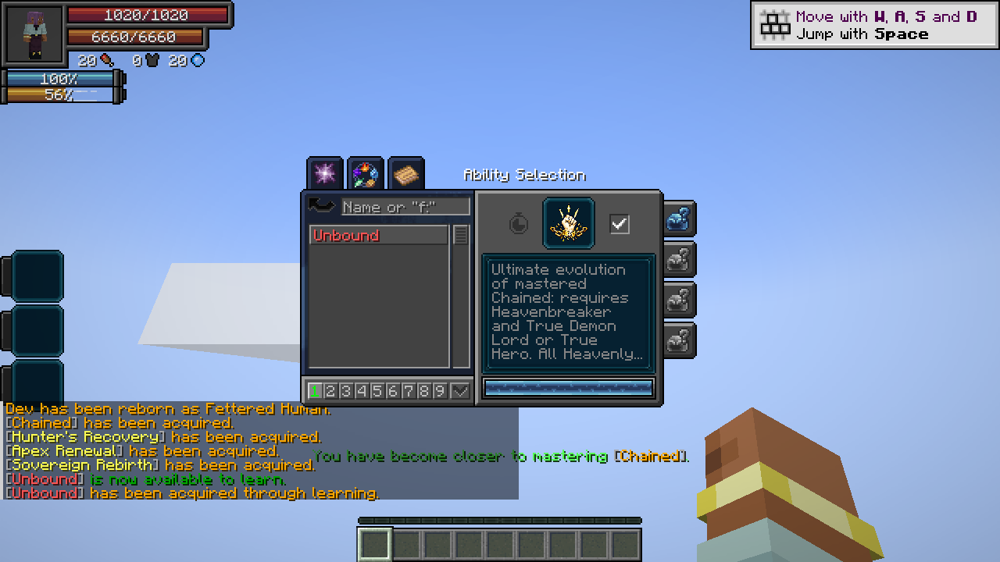

Unbound is the Ultimate evolution of Chained. The Heavenly Restriction remains binding, while its completed martial body gains stronger combat bonuses, automatic critical attacks and a defensive counter slash.
Contents

Obtaining
Reach Heavenbreaker, fully master your permanent Chained, and become a True Demon Lord or True Hero. Chained automatically evolves into fully learned, mastered Unbound on the next server check, even while unequipped or untoggled. No menu activation, learning input, additional EP threshold or resource payment is required. Unbound appears in Tensura’s normal Ultimate skill list.
Unbound replaces Chained and retains its completed mastery, toggle state, recorded inheritance, saved aura exemption, magicule ceiling and remaining Severance Rush cooldown. Chained slots across all nine presets become Unbound’s Severance Rush slots. The native Ultimate classification supplies normal Ultimate compatibility; this is not a Godly skill.
Additional damage triggered by an engraving retains that engraving’s native damage type.
Usage
Heavenly Restriction
[Passive - True] — Heavenly Restriction
| Ability information | Value |
|---|---|
| Damage type | None |
| Damage ID | None |
| Activation | Learned ownership, independent of slots and toggle |
Retains Chained’s pact: 5× later aura-capacity gains, unchanged starting aura, no new magicule capacity, up to 1 magicule/second with remaining biome/rate/sleep output converted to aura, restricted final skill learning, and aura-paid resistance/nullification acquisition. The lineage keeps its 90% aura / 10% magicule EP allocation; the blocked magicule share is not redirected. Existing usable skills and recorded reincarnation-derived grants remain available.
Unfinished skills can remain in the native menu and train; forbidden final acquisition leaves the entry unfinished and displays “Cannot acquire [skill].” with the skill name in its native tier color.
Martial Supremacy
[Passive - Toggle] — Martial Supremacy
| Ability information | Value |
|---|---|
| Damage type | None directly; strengthens Physical and Battlewill attacks |
| Damage ID | None |
| Resource cost | None |
| Effect | Bonus |
|---|---|
| Battlewill learning / mastery points | +9 / +9 |
| Resistance/Nullification learning points | +19 |
| Damage sourced from Battlewill abilities | 8×, takes priority over Physical |
| Other outgoing Physical damage | 5× |
| Numeric Battlewill buff effectiveness | 4×, excluding Aura Sword |
The damage branches are mutually exclusive. A Physical Battlewill receives 8×, not 8×5. Severance Rush and Counter are pure Physical skills and receive 5×. Aura Sword keeps its configured native damage increment and is excluded from buff amplification. Durations and resource costs retain native values. Tracked numeric buffs change to 4× without compounding; switching the toggle off restores the native buff values.
Broken Limit
[Passive - True - Mastered] — Broken Limit
| Ability information | Value |
|---|---|
| Damage type | None directly; preserves each attack’s original type |
| Damage ID | None |
| Requirement | Learned, mastered Unbound; independent of slots and toggle |
Your attacks lower Resistance → none and Nullification → Resistance, bypass numeric resistance attributes, and ignore dodge. Attributable status effects use the corresponding lower-tier immunity rules. Learned defenses are not deleted, and native barriers retain their own rules.
All attacks made by the player become critical hits, including melee, owned projectiles, ability damage and direct spiritual attacks. Critical damage uses the native critical damage multiplier attribute (1.5× by default). Native melee criticals are counted once; projectiles and skills receive one corresponding critical multiplier. This remains active with Martial Supremacy off. A default mastered diamond-sword Aura Slash uses 14 × 8 × 1.5 = 168 before other modifiers and defenses, with the toggle enabled.
Unerring Body
[Passive - In-slot] — Unerring Body
| Ability information | Value |
|---|---|
| Damage type | None |
| Damage ID | None |
| Requirement | Unbound equipped in the active preset |
Gain 30% incoming damage reduction, 100% projectile dodge, and 50% dodge against other damage. Works with Martial Supremacy off. Reduction follows native Strengthen Body rules: invulnerability-bypassing damage and barrier bypass level 2 or greater ignore it. Explicit dodge bypass still overrides dodge.
You are also immune to Fear, Slowness and Burden, including effects already present when this passive becomes equipped. Native Haki effects and forced movement cannot affect you. These immunities require the skill in the active preset and work with Martial Supremacy off.
Severance Rush
[Active - Press] — Severance Rush
| Ability information | Value |
|---|---|
| Damage type | Physical |
| Damage ID | minecraft:mob_attack |
| Resource cost | 2% current aura |
| Cooldown | 1 second |
| Movement | Instant teleport; 16-block aim reach |
| Path / arrival radius | 3 / 4 blocks |
| Base path damage | 1.5 × √A + W |
| Base arrival damage | 3 × √A + W |
A is aura actually spent; W is the main-hand weapon contribution described in Chained’s dash. Targeting, ground/midair/water activation, enemy stopping, terrain clearance and independent path/arrival hits follow Chained’s Severance Rush. With Martial Supremacy enabled and the default critical multiplier, player damage is base × 5 × 1.5. The dash has no Battlewill classification or EP scaling.
Counter
[Active - Press] — Counter
| Ability information | Value |
|---|---|
| Damage type | Physical |
| Damage ID | minecraft:mob_attack |
| Entry cost | 10% current aura, paid once |
| Cooldown | 10 seconds, starts on entry |
| Stance duration | 3 seconds |
| Movement speed during stance | 0 |
| Slash range | Up to 64 blocks, aimed toward the attacker |
| Slash hit radius | 3 blocks |
| Base damage | 10 × D + 6 × √A + W |
| Early cancellation | Press again; free, including during cooldown |
W is the main-hand weapon contribution when Counter releases, including item modifiers and enchantment damage. Successful hits run vanilla and native Tensura engraving callbacks. Wielding the Inverted Spear of Heaven applies its Nullification engraving.
D is the first eligible enemy hit’s incoming damage before defenses; A is aura paid when entering the stance. That hit, including a direct spiritual attack, is completely negated before dodge, HP or SHP damage, the stance ends, and a massive instantaneous slash cuts toward the attacker through blocks. The slash extends at least 16 blocks and up to 4 blocks beyond the attacker, capped at 64 blocks. Enemies in its corridor receive one hit each; ordinary hurt cooldown does not erase that hit. Terrain stays intact.
With an empty main hand, for a 20-damage incoming hit with 10,000 current aura on entry, A = 1,000 and base slash damage is approximately 389.74. With Martial Supremacy enabled and a default 1.5× critical multiplier, this becomes about 2,923.02, before defenses and other modifiers. The base includes at least 10× the negated hit plus aura scaling; it has no extra EP multiplier.
Environmental, self, allied and operator/void damage do not trigger Counter. Press again to cancel early, or let the three seconds expire; neither releases a slash or refunds entry cost. The cooldown remains. Death, logout, dimension changes, forgetting Unbound and native suppression end the stance and restore movement. The stance and its free cancellation state synchronize to the client.
Pale gold pressure lines mark the stance. The counter slash uses a broad layered crescent, dark cutting edge, white core, long pressure wake and expanding impact flash.